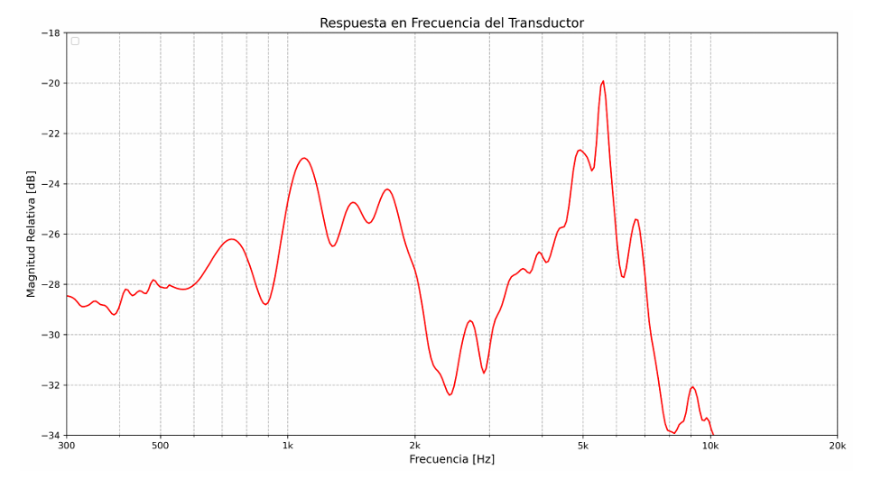
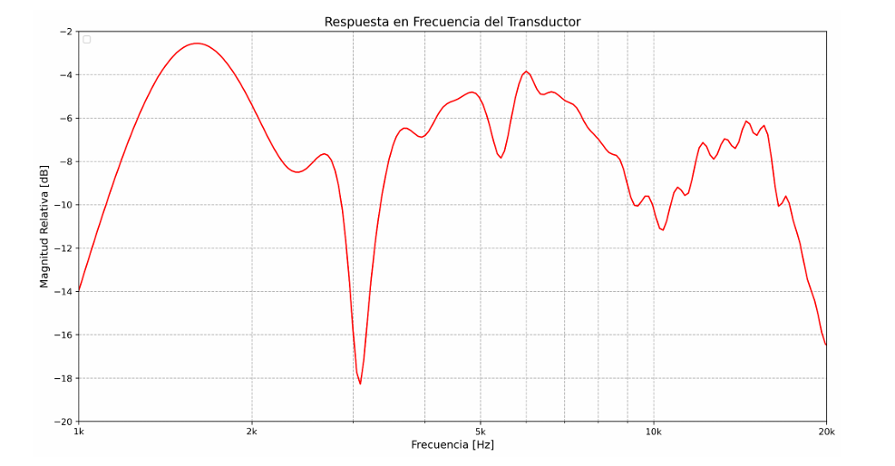
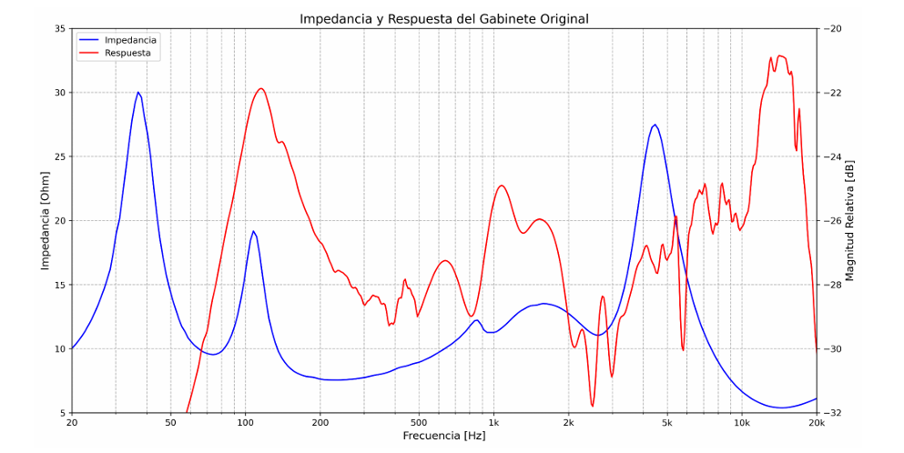
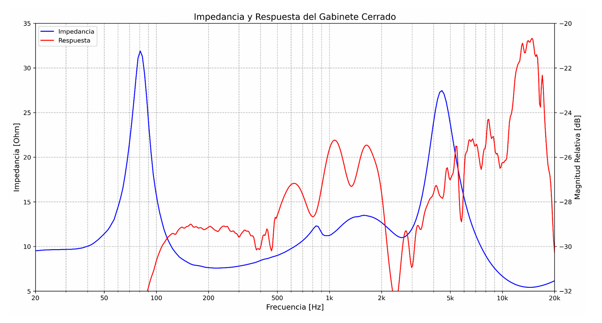
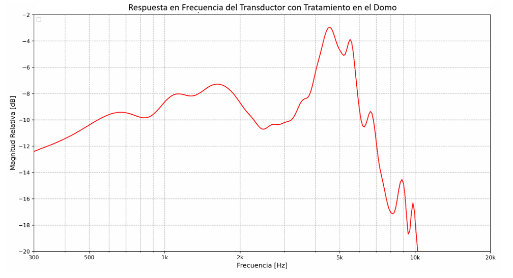
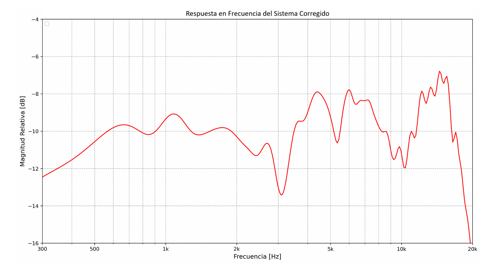

En el presente trabajo se realiza la caracterización de un sistema electroacústico pasivo para estudios audiométricos. Para ello se realiza un estudio de parámetros Thielle-Small de los transductores, curvas de impedancia, respuesta en frecuencia y respuesta directiva del sistema, para lo cual se emplearon los software REW y ARTA así como el desarrollo de código para el procesamiento de los datos.
Para cumplir con los requerimientos audiométricos, se propone un nuevo diseño de filtro de cruce del sistema y una mejora en el diseño del gabinete, para lo cual se emplearon los software de simulación Basta y VituixCAD2.





